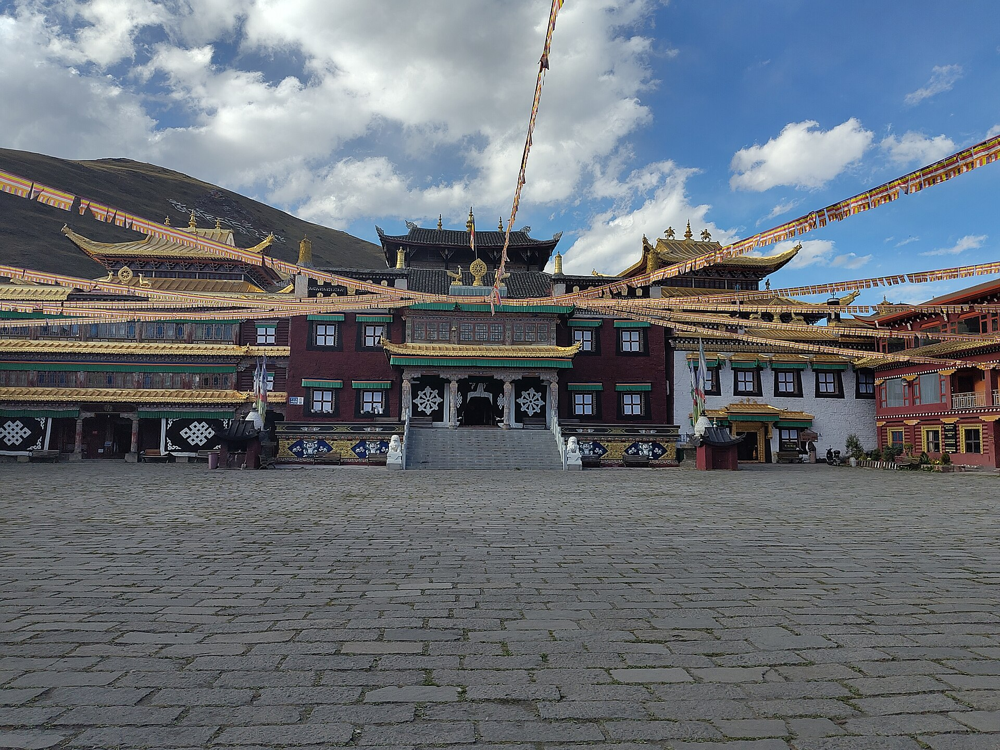
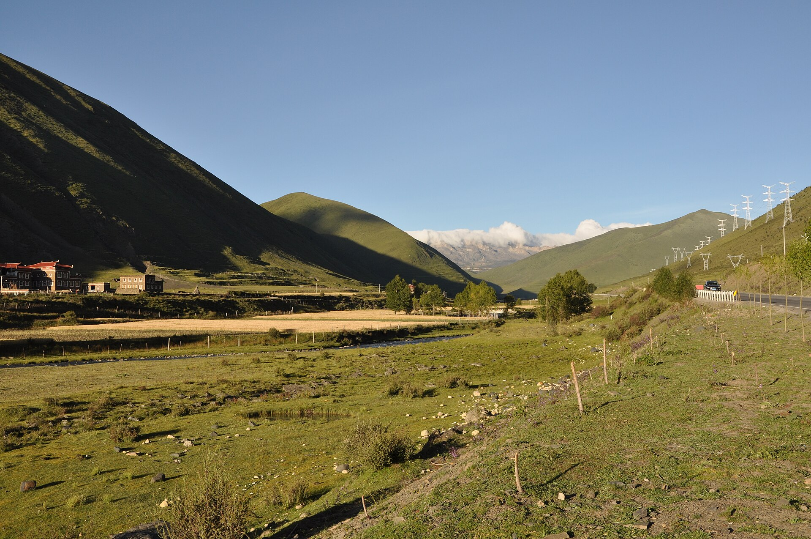
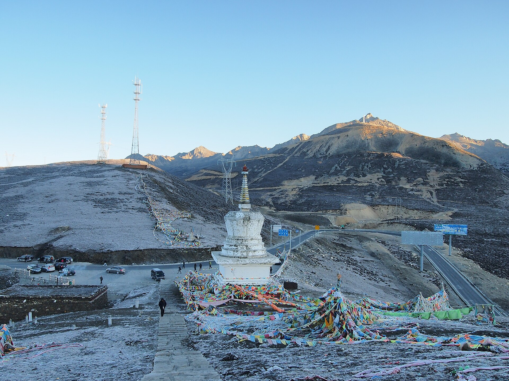

路线结论
北线不新，S434 和折多山才新
GPX 显示你在 2024 年 7 月已到过塔公、新都桥、八美、丹巴和小金。保留塔公目的地后，这个小环线让核心观景段约 70% 成为未走过路线。
推荐
康定 → S434 → 塔公 → 新都桥 → G318折多山 → 康定
不走
塔公 → 八美 → 丹巴 → 小金 → 卧龙
交互地图
每天的路，点开就知道该做什么
切换日期查看路线与时间线；切换“历史重复度”，绿色是较新的路，红色是你过去已经高度覆盖的路。
正在加载路线地图…
景点与玩法
不是赶景点，是把窗口留给真正值得停的地方
照片用于辨认场景；具体开放、收费和停车以现场为准。雨天优先保路线安全，不为打卡停在行车道边。
塔公草原：把时间留给慢走和等光
先沿草原边缘轻松步行，再找塔公寺、金顶与雅拉雪山方向的层次。阴天也适合拍经幡和寺庙细节，不必为了“蓝天大片”增加体力消耗。
- 推荐：草原缓步、长焦压缩雪山、低机位拍经幡与金顶。
- 节奏：每走 15—20 分钟停一次，先适应海拔再决定是否上坡。
- 避坑：骑马先说清路线、时间和总价；不进入牧民围栏，不近距离追拍牦牛。

塔公寺：先问拍摄规则
适合看建筑、转经与当地宗教生活。殿内是否允许拍摄要现场询问；按顺时针方向参观，不跨越法器、经书与门槛。

新都桥：它是一条河谷，不是单一景点
当天不额外追观景台。若 18:00 前到达且天气好，只在酒店附近正规停车点看十几分钟侧光；起雾或疲劳就直接入住。

折多山：观景服从返程时钟
只在开放且有车位的正规区域停。若浓雾、下雨、车流排队，直接通过；这里海拔最高，不安排爬坡，也不把“到此一游”当硬任务。
Day 2 的主角
S434 机场路 · 红海子方向
这是整趟旅程中历史重复较低的主景观路：高山湖泊、草坡、机场高原面和远山连续出现。计划把导航基准约 1小时20分放宽到 2小时40分，给天气、施工和正规停车留余量。
停只在划线停车区或明确观景停车点
看红海子最多 25 分钟，风大或头痛即走
删11:30 后才离开康定，删除沿途第二个停靠点
住宿
第一晚压低海拔，第二晚换取新路线
房态与价格会变；预订时优先确认免费停车、最晚入住、早餐时间和供氧是否包含在具体房型。
8月28日 · 雅安
雅安时代天街亚朵酒店
全季同档 · 低海拔过渡
- 适合 21:00 左右入住，不需要夜翻高山
- 次日早餐后直接前往康定
- 确认地下/地面停车与晚到保留
8月29日 · 新都桥
全季酒店（康定新都桥 G318 店）
首选 · 停车 / 洗衣 / 部分供氧房型
- 位于第三天折多山返程方向
- 晚餐后不再开车，不饮酒
- 供氧设施须按所订房型再次确认
高反备选 · 康定
如果明显不适，当晚下降到康定
备用方案，不硬住新都桥
- 持续头痛并伴恶心、步态不稳或意识异常：立即下降并就医
- 从塔公原路 S434 返回康定，取消新都桥
- 第二天直接返成都，不再翻折多山
安全与止损
不靠意志力赶路，靠硬节点守住 19:00
以下是执行规则，不是建议。山区天气和临时交通管控高于网页计划。
返程硬截止
8月30日 11:30 必须离开康定。计划 16:20 到武侯，保留约 2小时40分给降雨、事故和成都晚高峰。
雨雾删减顺序
先删折多山停留，再删新都桥黄昏拍摄，再删红海子停留；塔公保留，但压缩为 90 分钟。绝不压缩返程缓冲。
预警停驶条件
遇暴雨橙/红色预警、地灾高风险提示、交警临时管控，停止上 S434 或折多山；就近回康定/雅安，不绕行陌生乡道。
高反下撤条件
轻微头痛先停下补水休息；症状加重，或出现反复呕吐、步态不稳、静息气促、意识异常，立即下降并寻求医疗帮助。
出发清单
勾选状态会保存在这台设备
出发前 24 小时重新检查天气、路况、酒店和车辆；不要只依赖截图或离线网页。
路线依据
为什么这样走
本页读取你提供的 365,564 个 GPX 轨迹点；候选公路按 200米采样，并在局地米制投影下计算与历史轨迹 500米范围的覆盖率。500米是识别“是否大概率走过这条走廊”的容差，不代表车道级定位。